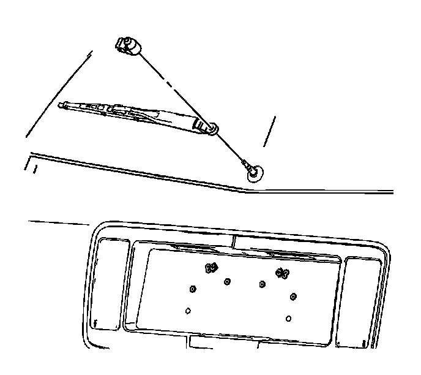

Rear Window Wiper Arm Replacement
Rear Window Wiper Arm Replacement
Removal Procedure

1. Mark the position of rear wiper blade on the rear window with tape or an erasable marker.
2. Pivot the rear wiper arm nut cap.
3. Remove the rear wiper arm nut.
4. Grasp the wiper arm. Rock the wiper arm from the wiper motor until the wiper arm disengages from the wiper motor.
5. Remove the rear wiper blade from the rear wiper arm. Refer to Rear Window Wiper Blade Replacement (Rear Window Wiper Blade Replacement) .
Installation Procedure
1. Install the rear wiper blade onto the rear wiper arm. Refer to Rear Window Wiper Blade Replacement (Rear Window Wiper Blade Replacement) .
2. Position the rear wiper arm onto the wiper motor while aligning the rear wiper blade to the mark made on the rear window.
Notice: Refer to Fastener Notice (Fastener Notice) .
3. Install the rear wiper arm nut.
Tighten the nut to 17 N.m (13 lb ft).
4. Install the rear wiper arm nut cap.
5. Remove the tape or the mark from the rear window.
6. Inspect the rear wiper system for proper operation.